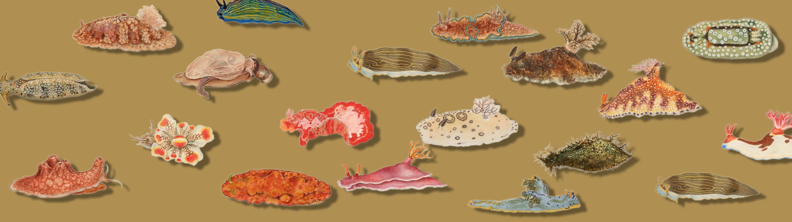
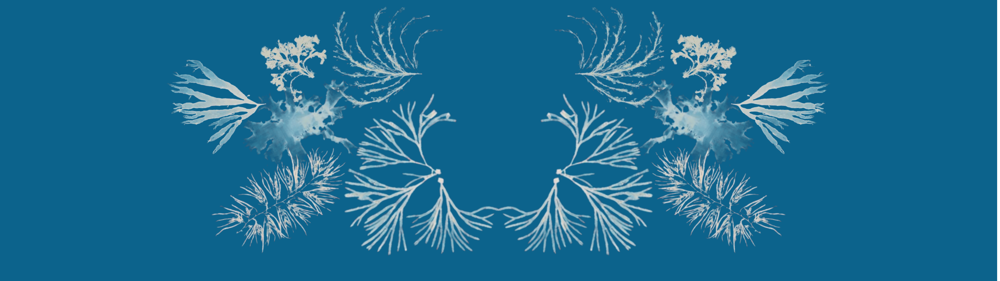

UNDERSKY is a future-historical immersive installation of Earth’s oceanic flora and fauna long after humanity has departed for the stars. Created using public-domain scientific illustrations brought back to life in reconstructed ecologies, the work stages mediated nature in the face of ecological loss, situated within immersive art’s legacy of scientific spectacle.
UNDERSKY
Stills


Watch
PRESENTATIONS
- 05/29/2026 – 05/30/2026 OCEAN WEEK CANADA @ CASERNE 26 (QC, CA) - TICKETS
- 05/23/2026 CHARLES STREET VIDEO (ON, CA)
Credits
- Tara Rose MorrisVisuals & system design
- Graham SteinmanComposition & sound